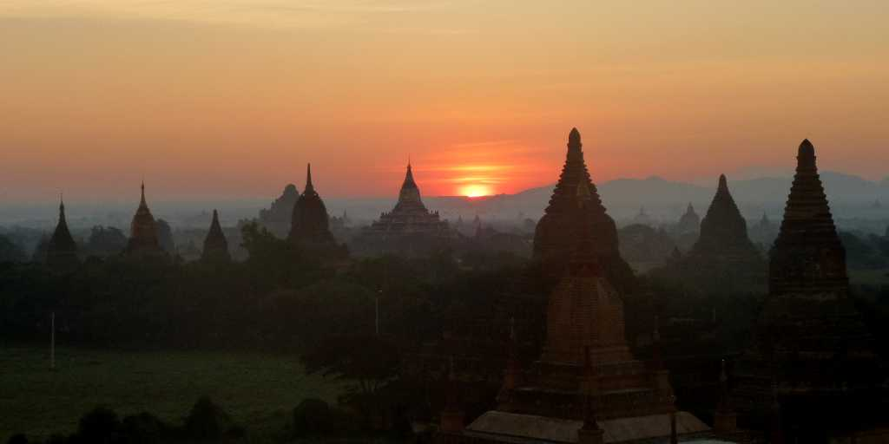
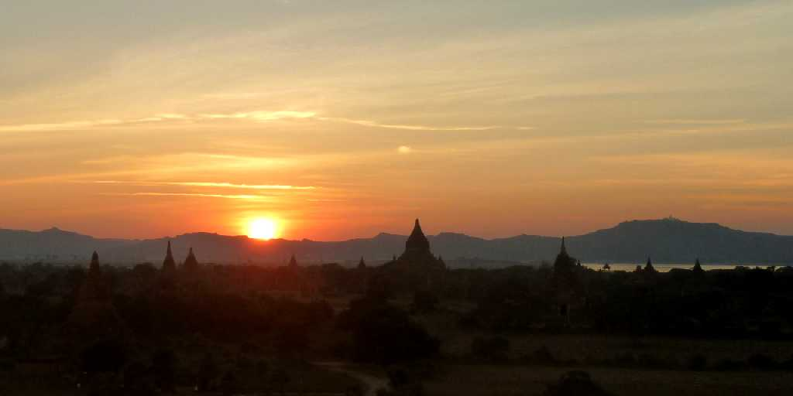
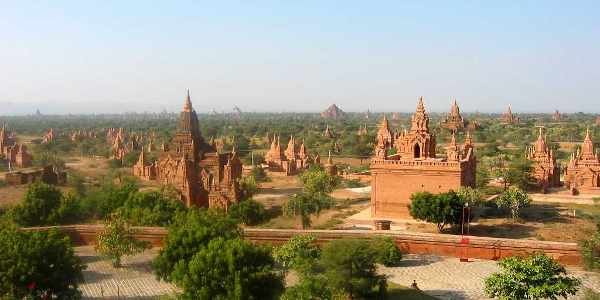

January 1 2011 6:52 Sunrise Bagan
１１世紀から１３世紀に渡り創られた２,０００以上のパゴダが建ち並ぶ 三大仏教遺跡の一つバガン遺跡で 平成２３年の初日の出(ミーニェンゴ寺院より)

December 31 2010 17:34 Sunset Bagan
バガン遺跡の西を流れるイラワジ川方面に沈む平成２２年大晦日の日没(シュウエサンドーパゴダより)

最初のビルマ統一王朝であるパガン朝が８７４年ピンダヤ王によりパガンに都を移し栄えた １２世紀から１３世紀には上座部仏教の国教化が進みスリランカ インド タイ アンコール朝との交流により仏僧や学生を引きつけ仏教研究の国際的な中心地となった